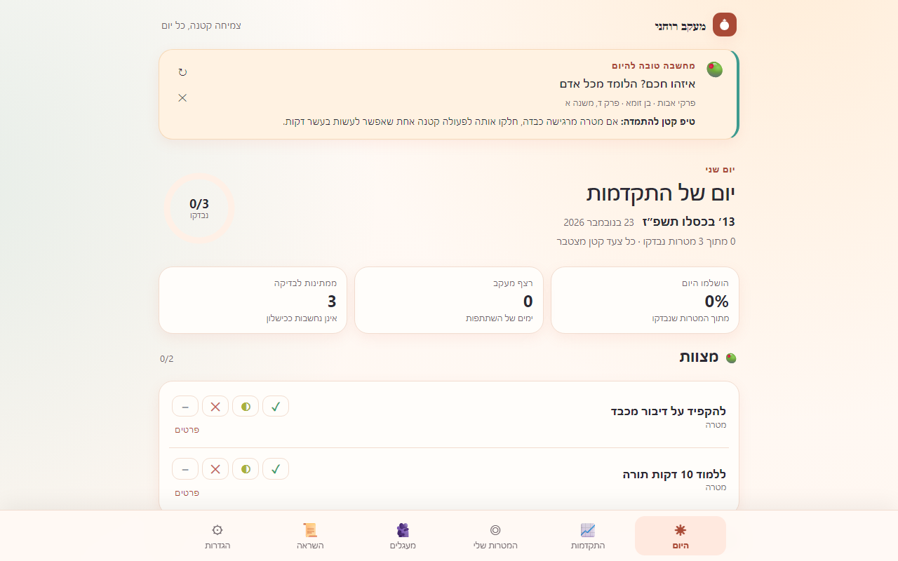
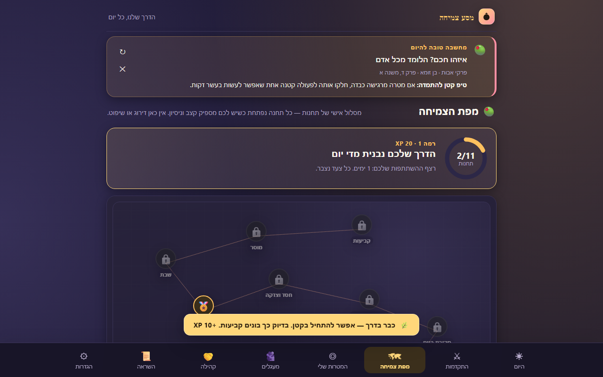
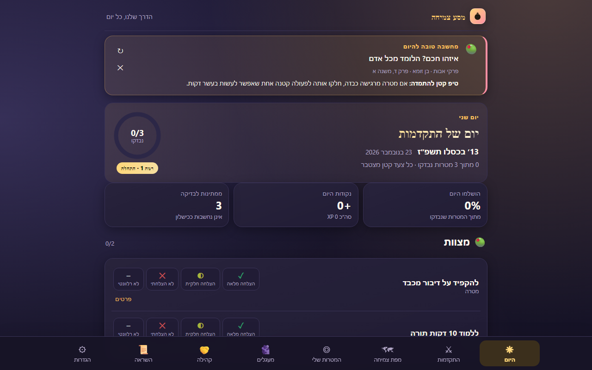
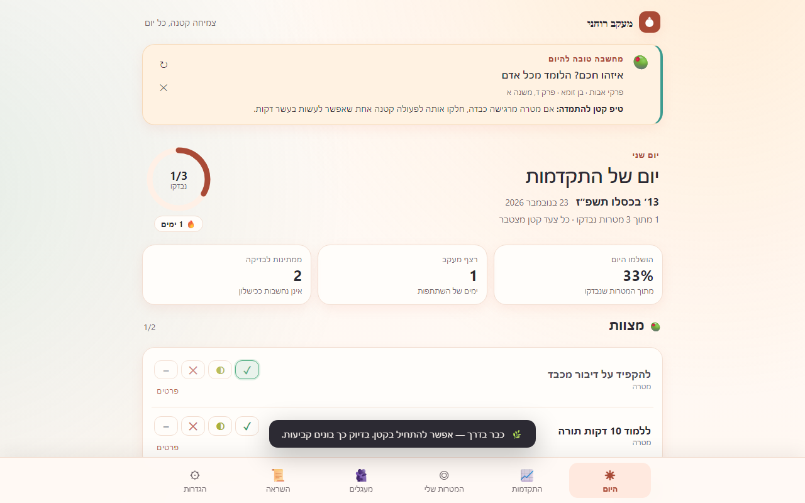
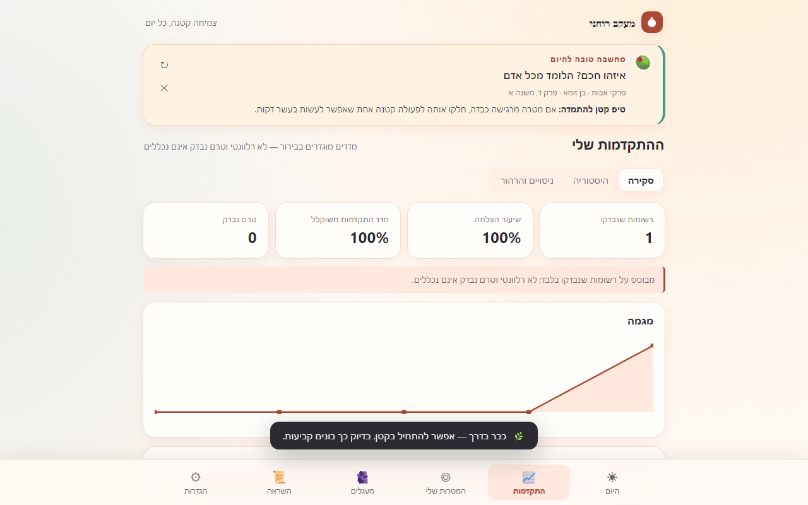
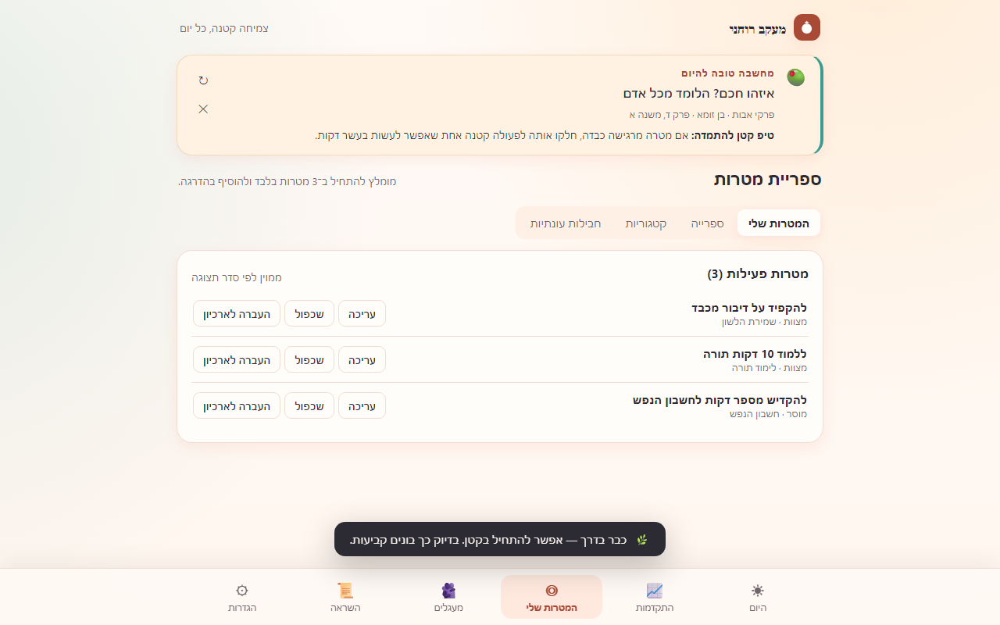
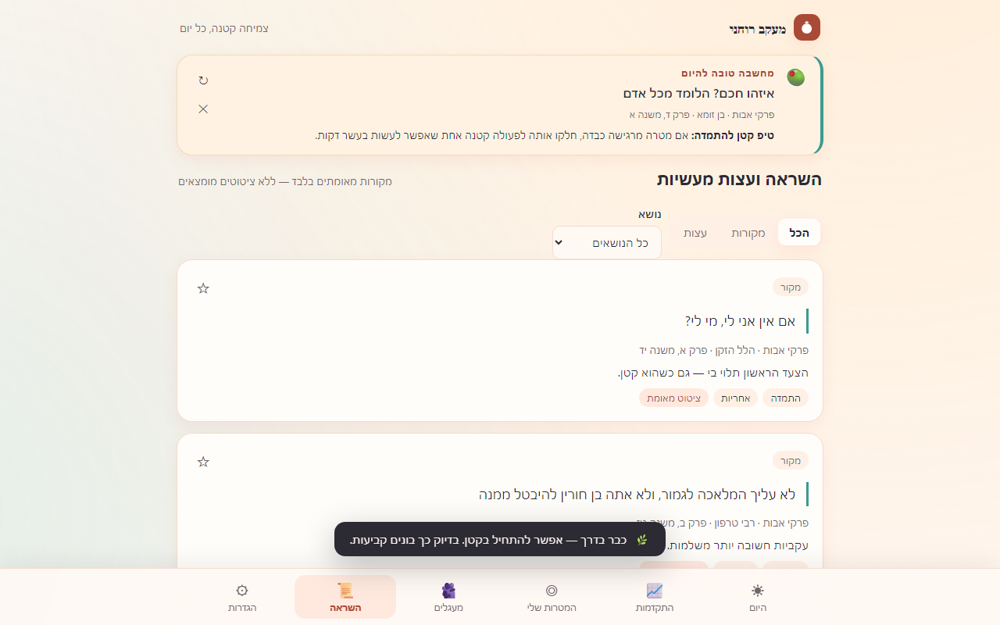
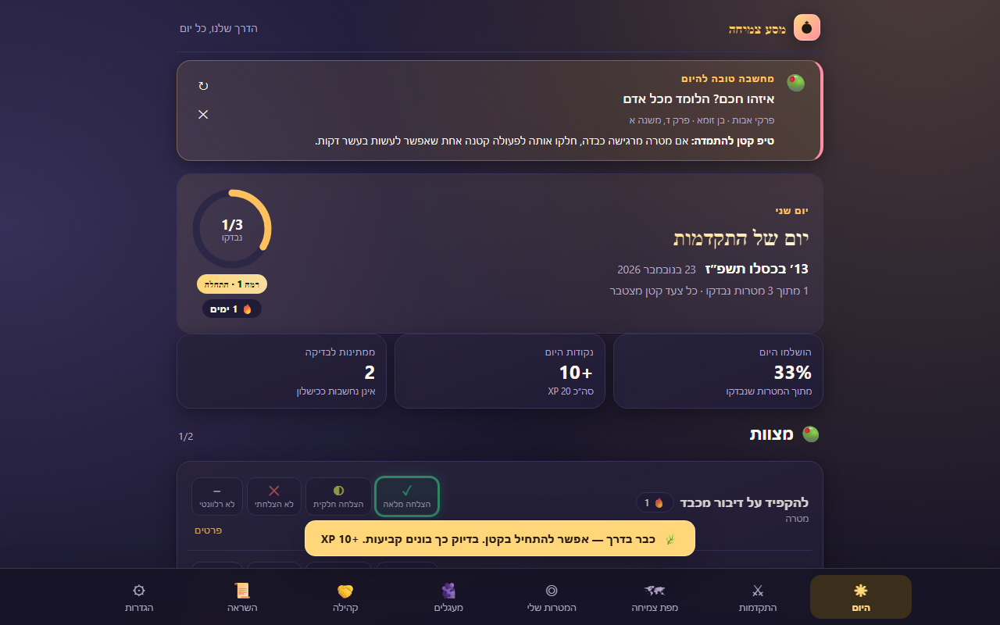
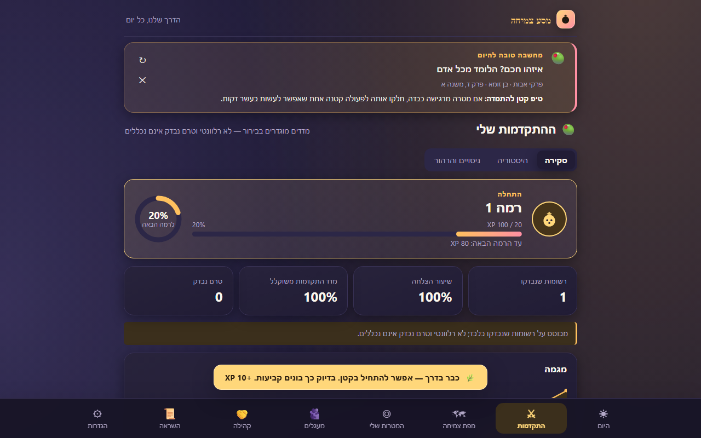
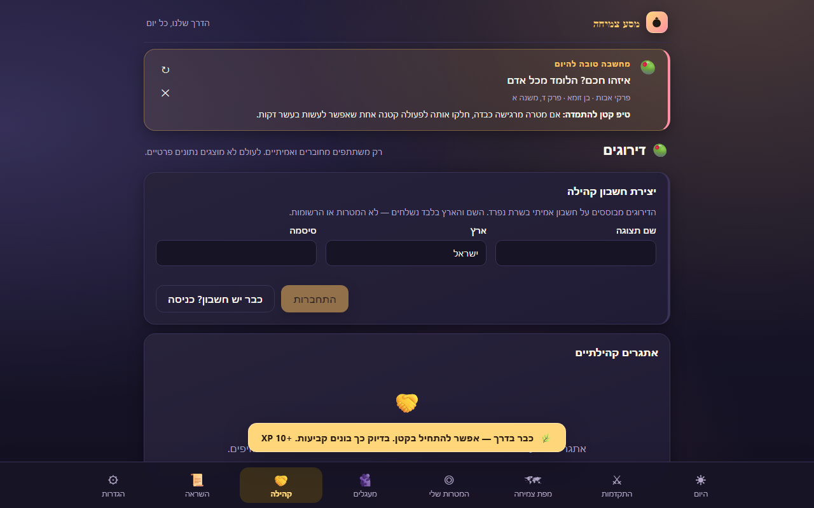

מעקב רוחני
הגרסה הלא־מגומרת — בהירה, חמה ונעימה

- סימון מטרה במגע אחד או שניים
- ארבע תוצאות + מצב “טרם נבדק” נפרד
- סטטיסטיקה עם הגדרות מוגדרות היטב
- היסטוריה, ניסויים שבועיים וייצוא נתונים
- ציטוט יהודי וטיפ מעשי בראש העמוד
פלטפורמה יהודית לבניית הרגלים: מעקב יומי קל, לוח שנה עברי וזמנים יהודיים, ניתוח התקדמות, השראה מאומתת — ובגרסת המשחק גם XP, רמות, הישגים, דירוגים ומפת תחנות מקורית.

🗺️ 11 תחנות הרגל 🫒 10 ערכות נושאאותו מנוע, אותו מודל נתונים, אותה לוגיקה — ממשק שונה לגמרי.
הגרסה הלא־מגומרת — בהירה, חמה ונעימה

הגרסה המגומרת — XP, רמות, הישגים וקהילה

צילום מסך אמיתי של שני המוצרים, מהיום הראשון ועד מפת הצמיחה.
הסרטון הוקלט מהאפליקציות עצמן בדפדפן — בלי מצגת ובלי נתוני דמה.
לחצו על תמונה כדי להגדיל.







יום קשה אינו מוחק התקדמות. רשומה שלא נבדקה אינה כישלון, והחזרה למסלול תמיד אפשרית.
חישוב שמשי לפי מיקום ואזור זמן, עם שיטות חישוב מוצהרות, אופסטים ומדיניות שבת ויו״ט.
הנתונים נשמרים במכשיר. רק מי שבחר במפורש להצטרף לדירוג שולח מטא־נתונים מצטברים — לעולם לא מטרות או הערות פרטיות.
חבילת JSON עם נושאים והישגים, ניתנת לעריכה במנהל האפליקציה ובשרת, עם גיבוי מובנה.
ליבה משותפת ב־TypeScript וממשקי React זהים. רק ערכת הנושא והמסכים הנוספים משתנים.
17 בדיקות ליבה, 27 בדיקות API, 8 זרימות E2E ודוח QA מעוצב עם חותמת זמן.
״לא עליך המלאכה לגמור, ולא אתה בן חורין להיבטל ממנה״פרקי אבות, פרק ב, משנה טז